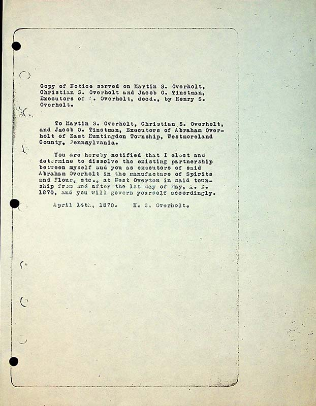
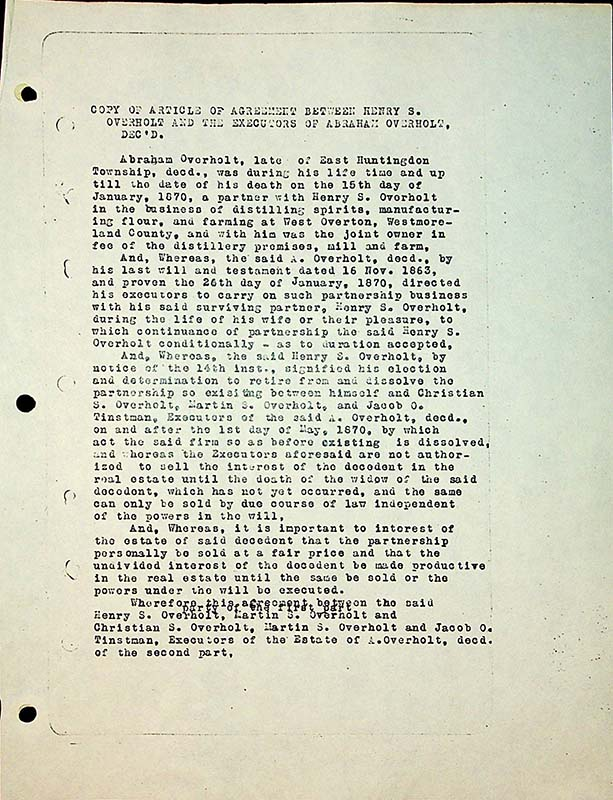
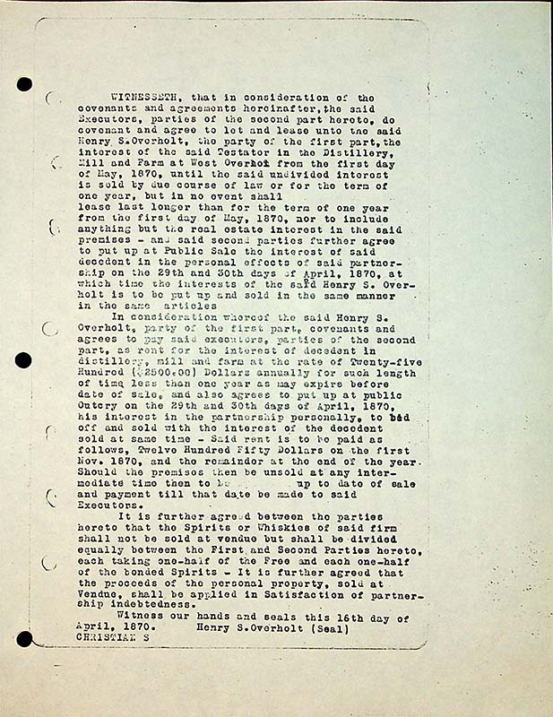
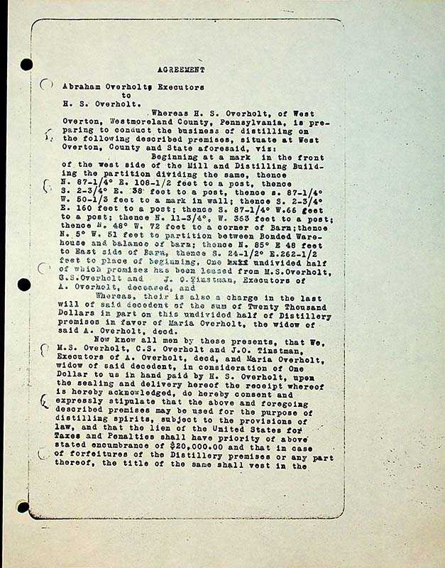
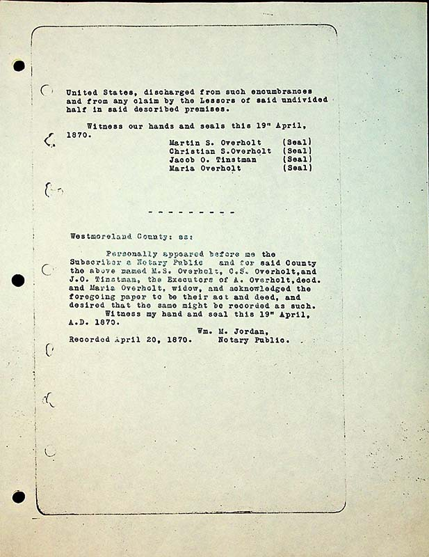

Copy of Notice served on Martin S. Overholt, Christian S. Overholt and Jacob O. Tinstman Executors of A. Overholt, decd. by Henry S. Overholt
To Martin S. Overholt, Christian S. Overholt, and Jacob O. Tinstman, Executors of Abraham Overholt of East Huntingdon Township, Westmoreland County, Pennsylvania
You are hereby notified that I elect and determine to dissolve the existing partnership between myself and you as executors of said Abraham Overholt in the manufacture of Spirits and Flour, etc., at West Overton in said township from and after the 1st day of May, A.D. 1870, and you will govern yourself accordingly.
April 14th, 1870
H.S. Overholt
Copy of Article of Agreement between Henry S. Overholt and the Executors of Abraham
Overholt, Dec’d.
Abraham Overholt, late of East Huntingdon Township, decd., was during his life time and up till the date of his death on the 15th day of January, 1870, a partner with Henry S. Overholt in the business of distilling spirits, manufacturing flour, and farming at West Overton, Westmoreland County, and with him was the joint owner in fee of the distillery premises, mill and farm,
And, Whereas, the said A. Overholt, decd., by his last will and testament dated 16 Nov. 1863, and proven the 26th day of January, 1870, directed by his executors to carry on such partnership business with his said surviving partner, Henry S. Overholt, during the life of his wife or their pleasure, to which continuance of partnership the said Henry S. Overholt conditionally- as to duration accepted,
And, Whereas, the said Henry S. Overholt, by notice of the 14th inst., signified his election and determination to retire from and dissolve the partnership so existing between himself and Christian S. Overholt, Martin S. Overholt and Jacob O. Tinstman, Executors of the said A. Overholt, decd., on and after the 1st day of May, 1870, by which ac the said firm so as before existing is dissolved and whereas the Executors aforesaid are not authorized to seel the interest of the decedent in the real estate until the death of the widow of the said decedent, which has not yet occurred, and the same can only be sold by due course of law independent of the powers in the will,
And, Whereas, it is important to the interest of the estate of said decedent that the partnership personally be sold at a fair price and that the undivided interest of the decedent be made productive in the real estate until the same be sold or the powers under the will be executed.
Wherefore, this, agreement between the party of the first part {some overtyping occurred here}, Henry S. Overholt, Martin S. Overholt and Christian S. Overholt, Martin S. Overholt, and Jacob O. Tinstman, Executors of the Estate of A. Overholt , decd., of the second part,
Witnesseth, that in consideration of the covenants and agreements hereinafter, the said Executors, parties of the second part hereto, do covenant and agree to let and lease unto said Henry S.Overholt, the property of the first part, the interest of the said Testator in the Distillery, Mill and Farm at West OVerton from the first day of May, 1870, until the said undivided interest is sold by due course of law or for the term of one year, but in no event shall lease last longer than for the term of one year from the first day of May, 1870, nor to include anything but the real estate interest in the said premises- and said second parties further agree to put up at Public Sale the interest of said decedent in the personal effects of said partnership on the 29th and 30th days of April, 1870, at which time the interests of the said Henry S. Overhold is to be put up and sold in the same manner in the same articles
In consideration whereof the said Henry S. Overholt, party of the first part, covenants and agrees to pay said executors, parties of the second part, as rent for the interest of decedent in distillery, mill and farm at the rate of Twenty-five Hundred ($2500.00) Dollars annually for such length of time less than one year as may expire before date of sale, and also agrees to put up at public Outcry on the 29th and 30th days of April, 1870, his interest in the partnership personally, to bid off and sold with the interest of the decedent sold at the same time- Said rent is to be paid as follows, Twelve Hundred Fifty Dollars on the first Nov. 1870, and the remainder at the end of the year. Should the premises then be unsold at any intermediate time then to be [blank] up to date of sale and payment till that date be made to said Executors.
It is further agreed between the parties hereto that the Spirits or Whiskies of said firm shall not be sold at vendue but shall be divided equally between the First and Second Parties hereto, each taking one-half of the Free and each one-half of the bonded Spirits- It is further agreed that the proceeds of the personal property, sold at Vendu shall be applied in Satisfaction of partnership indebtedness.
Witness our hands and seals this 16th day of April 1870. Henry S. Overholt (Seal)
Christian S.
Agreement
Abraham Overholts Executors to H.S. Overholt.
Whereas H.S. Overholt , of West Overton, Westmoreland County, Pennsylvania, is preparing to conduct the business of distilling on the following described premises, situate at West Overton, County and State aforesaid, viz:
Beginning at a mark in the front of the west side of the Mill and Destilling Building the partition dividing the same, thence N. 87-1/4° E. 108-¼ feet to a post, thence S. 2-3/4° E. 38 feet to a post, thence S. 2-3/4° E. 160 feet to a post; thence S. 87-1/4° W. 66 feet to a post; thence N. 11-3/4° , W. 363 feet to a post; thence N. 48° W. 72 feet to a corner of Barn; thence N. 5° W. 51 feet to a partition between Bonded Warehouse and balance of barn; thence N. 85° E 48 feet to East side of Barn thence S. 24-1/2° E. 262-½ feet to place of beginning One xxxxundivided half of which premises has been leased from M. S. Overholt, G. S. Overholt and J.O. Tinstman, Executors of A. Overholt, deceased, and
Whereas, their [sic] is also a charge in the last will of said decedent of the sum of Twenty Thousand Dollars in part on this undivided half of Distillery premises in favor of Maria Overholt, the widow of said A. Overholt, decd.
Now know all men by these presents, that We, M.S. Overholt, C.S. Overholt, and J.O. Tinstman, Executors of A. Overholt, decd, and Maria Overholt, widow of said decedent, in consideration of One Dollar to us in hand paid by H.S. Overholt, upon the sealing and delivery hereof the receipt whereof is hereby acknowledged, do hereby consent and expressly stipulate that the above and foregoing described premises may be used fro the purpose of distilling spirits, subject to the provisions of law, and that the lien of the United States for Taxes and Penalties shall have priority of above stated encumbrance of $20000.00 and that in cas of forfeitures of the Distillery premises or any part thereof, the title of the same shall vest in the
United States, discharged from such encumbrances and from any claim by the Lessors of said undivided half in said described premises.
Witness our hands and seals this 19th April, 1870.
Martin S. Overholt (seal) Christian S. Overholt (seal) Jacob O. Tinstman (seal) Maria Overholt (seal)Westmoreland County: ss:
Personally appeared before me the Subscriber a Notary Public and for said County the above M.S. Overholt, C.S. Overholt, and J.O. Tinstman, the Executors of A. Overholt, decd. and Maria Overholt, widow, and acknowledged the foregoing paper to be their act and deed, and desired that the same might be recorded as such.
Witness my hand and seal this 19th April, A. D. 1870. Wm. M. Jordan, Notary
Recorded April 20, 1870.